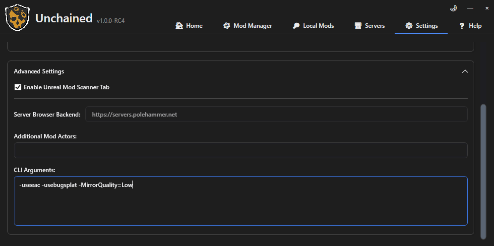
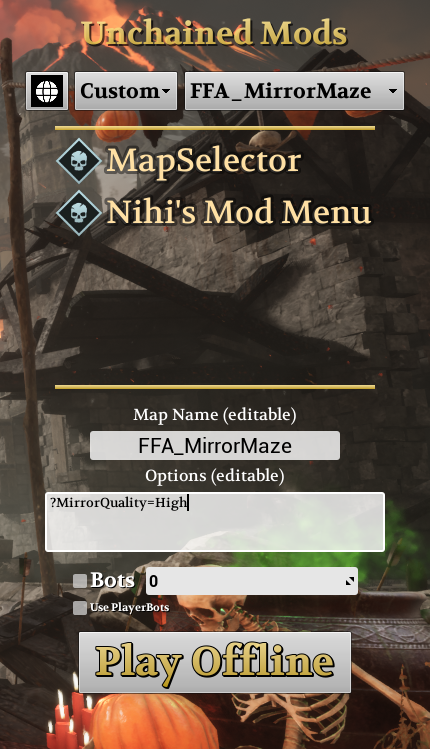
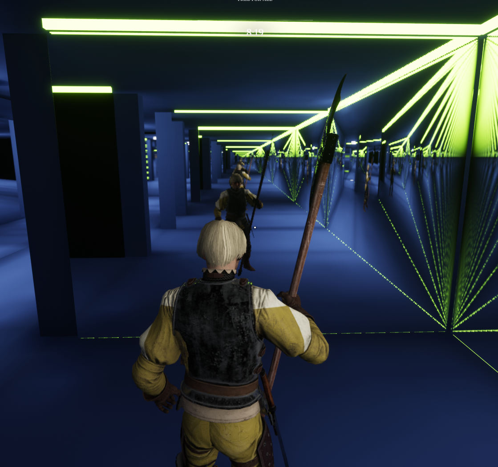
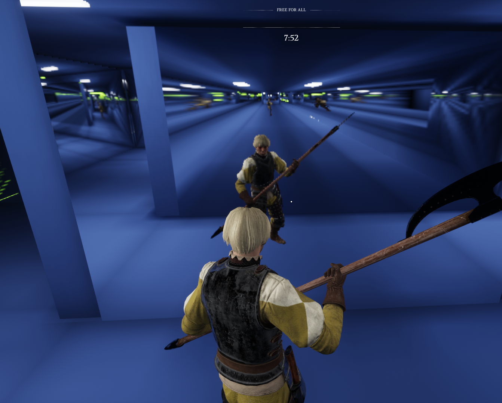

MirrorKit¶

Live mirrors for Chivalry 2 Unchained maps. Reflections show you, other players and the room; facing mirrors can form a tunnel, and there are cheap shiny surfaces and breakable mirror tiles. MirrorKit is a library: it adds no map by itself, and maps that use it need it installed.
Version 1.0.0. Built with ArgonSDK (Unreal Engine 4.25). The MirrorLab map shows every mirror type; MirrorMaze is a full mirror maze built with it.
What it does¶
- True reflections. You see your own full body in first person (moving legs, head, the weapon in your hand), other players and the room, with nothing behind the mirror leaking in.
- Partner tunnels. Two facing mirrors set as partners show a reflection inside a reflection. With
InfiniteTailon, the tunnel keeps going. - Styles and bodies. Every mirror has a
Style(True, Floor, Funhouse) and aBody(Full body, Head only, Stretch head, Headless, Ghost). - Breakable tiles and cheap surfaces. Tiles break and can be walked through; baked mirror materials cost almost nothing.
- Scales to the player. Each reflection is sized to the part of the screen it covers, so small and distant mirrors cost less. Quality presets and a shared capture budget keep mirror-heavy maps playable.
- Players and servers choose. Players can lower or raise the quality, servers can set it for everyone or cap it, and maps keep working without the options.
Installation¶
Copy MirrorKit.pak and the map's own PAK into Chivalry 2/TBL/Content/Paks/, then launch through the Unchained Launcher. Server hosts need both files on the server too. The server itself renders no mirrors.
Without MirrorKit.pak a map that uses it still loads, but its mirrors are missing.
Mirror quality¶
Every map ships with mirror settings chosen by its maker. You can raise or lower them for your own game, and server hosts can set them for everyone.
For your own game: add a launch option under Settings › Advanced Settings › CLI Arguments in the Unchained Launcher, for example:

For a server, or when playing offline: put it in the map's Options box in the Unchained main menu, with a ? instead of a -:

| Preset | For |
|---|---|
Off |
No live reflections; mirrors show dark glass |
Low |
Weaker PCs: softer, slower reflections |
Medium |
A middle ground |
High |
The settings tuned for mirror-heavy maps |
Ultra |
Strong PCs: full resolution, the nearest mirrors update every frame |
Omega |
Ultra plus partner tunnels, the most expensive |
Only the tunnels: -MirrorPartners=1 (or ?MirrorPartners=1) turns partner tunnels on without changing anything else; 0 turns them off. A server can forbid them with ?MirrorNoPartners.
| Partners on | Partners off |
|---|---|
 |
 |
Jitter at high uncapped FPS: if reflections look slightly jittery when you move sideways along a mirrored wall (usually above about 200 FPS), add -MirrorFocusRate=1000. The mirrors nearest you then update every frame. It costs about 10 % FPS on a mirror-heavy map; at a frame cap of 144 or lower you do not need it.
If you choose nothing, mirrors use the map's settings, or the server's if the host set any. Single values (resolution, update rate, distance and more) and a server cap are also available: every quality option.
Making a map with mirrors¶
- Copy the
ContentofMirrorKit_Source.ziptoArgonSDK/Content/Mods/MirrorKit/(this exact folder: the shared PAK loads the assets under these names). - Drag
BP_CaptureMirror(or a preset) into your level, face its +X axis out of the wall, and size it with the actor scale (Y and Z × 100 = width and height in cm). - Keep 4 cm clear behind the face (5 cm with a partner); the orange box shows the space when the mirror is selected.
It works with no other setup. The map-making guide covers spacing, packaging your map without the kit's files, settings for many mirrors at once, the capture budget, tiles and every setting.
Choose the look¶
| Setting | Choices |
|---|---|
Style |
True: a true reflection (default). Floor: sharper for large floor mirrors seen from above. Funhouse: magnified carnival look with gaps at the edges |
Body |
How your own reflection looks: Full body (default), Head only, Stretch head (stretches as you look up and down), Headless, Ghost (invisible body, floating weapons) |
Partner |
The facing mirror for a tunnel. Both mirrors name each other; leave it empty for a normal mirror |
Ready-made presets: BP_Mirror_Funhouse, BP_Mirror_Headless, BP_Mirror_StretchHead (renders at full resolution, since the effect needs detail) and BP_Mirror_Ghost. Every setting can still be changed on any placed mirror.
Body effects are per viewer: a ghost or headless mirror changes only your own reflection as you see it; other players see you normally.
Other pieces¶
| Asset | What it is | Cost |
|---|---|---|
BP_MirrorTileLive (with two Tiled mirrors) |
Breakable tiles showing a live reflection on both faces | Medium |
BP_MirrorTile / BP_MirrorTile_NoSnow |
Breakable tiles with a still reflection | Very low |
M_MirrorEnvironment, M_MirrorDarkCenter |
Shiny materials with a baked image of the room | Very low |
BP_MirrorKitSettings |
One place to set every mirror's performance settings | - |
BP_MirrorKitBudget |
A shared limit on mirror renders per frame | - |
Performance¶
A live mirror costs one scene render each time it updates, so frame time follows renders per frame, not the number of mirrors. MirrorKit keeps that down by default: mirrors you cannot see do not render, mirrors beyond 25 m keep their last image, updates are spread across frames, reflections are sized to the screen, and an optional budget caps renders per frame. A partner tunnel adds one inner render per mirror, at half rate. On Mirror Maze, partners cost about 7 % FPS.
For mirror-heavy maps, read designing maps for mirror performance: baked lighting, fewer and longer mirrors, update schedules and measured results.
Known limitations¶
- Reflections of mirrors inside other independent mirrors are plausible but not geometrically exact; partners make them exact.
- Funhouse mirrors without partners show other funhouse mirrors as dark, and
InfiniteTaildoes not extend funhouse tunnels. - Sheathed weapons in first-person reflections hang on the third-person body, so they can sit slightly off the reflected body.
- Live tiles show one reflection level; still tiles never show players.
- Everyone on a server should use the same MirrorKit version.
License¶
Copyright (C) 2026 SageFlare. Original MirrorKit work is licensed under the GNU General Public License v3.0 (GPL-3.0-only): you may use, change and share it, and anything you publish that is built on it must be released under the same license, with its source. See LICENSE and THIRD_PARTY_NOTICES.md.
Releases up to 0.10.0 were published under the MIT License and stay under it.